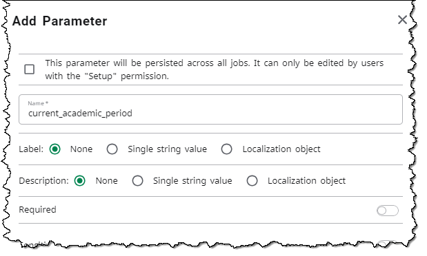

Insights Custom Transformations for Data Connect
Insights Custom Transformations Insights Custom Transformations enable report developers to create custom tables, views, and indexes based on your data in the Insights Data Warehouse.
Requirements
To build your own custom transformations in Ellucian Insights, your institution must have the Insights Enterprise Extensibility license. This license enables access to the Insights Custom Transformations of the Integration Designer.
The Integration Designer requires an Experience Premium license.
For more information about the license or other requirements, contact your Ellucian representative.
Experience cards and titles
This documentation refers to the Experience cards by their card title, as delivered by Ellucian. However, your Experience administrator can choose to change the card title for your institution.
| Card Title | Card Type |
|---|---|
| Integration Designer | Data Connect Integration Designer |
| Integration Packages | Data Connect Packages |
Basic Integration Designer concepts
A complete set of documentation for the Integration Designer is available in the Data Connect Integration Designer section. Generally, these are the main concepts to know to build custom transformations.
- You use the Integration Designer to build workflows, known as pipelines.
- Fittings are the building blocks of pipelines.
- Pipelines execute a series of steps or segments.
- Each segment uses the fitting appropriate to the functionality needed for the task in the workflow.
- To execute the pipelines, you run them as jobs using Integration Packages.
- You can schedule Integration Packages jobs to run at regular intervals.
Integration Designer fittings for Insights Custom Transformations
- Add Index fitting
- Add Primary Key fitting
- Create Function fitting
- Create Table fitting
- Create View fitting
- External Data fitting
- Extract Data fitting
- Intermediate SQL fitting
- Target SQL fitting
Where to begin
- Your Experience administrator must configure permissions and access to the two cards, Integration Designer and Integration Packages. Refer to Configure access to Insights Custom Transformations for instructions.
- Designers can begin building custom transformations for Insights. To access the Integration Designer, to go Ellucian Experience and locate the Integration Designer card.
Where to find the documentation
This section of the Insights documentation contains the relevant information for building Insights Custom Transformations.
Because you use other Ellucian tools to build these transformations, Ellucian recommends that you review and reference these additional documentation resources while building and preparing to execute your pipelines.
| Description | Reference |
|---|---|
| Instructions to configure access to the Integration Designer and Integration Packages cards. | Configure access to Insights Custom Transformations |
| Complete guide to using the Integration Designer. | Data Connect Integration Designer documentation |
| General procedures for configuring and using Data Connect for integrations, including Integration Packages and the Integration Designer. | Data Connect documentation |
| How to build pipelines using the Integration Designer. | Develop pipelines |
| How to create, run, and manage pipeline jobs for pipelines you build with the Integration Designer. | Manage pipeline jobs |
| Release notes for the Integration Designer and Integration Packages. | Data Connect - Release Notes |
Example Insights Custom Transformations
See these topics for example Insights pipelines you can build for Insights Custom Transformations using the Integration Designer.
- Example: Build a pipeline to create a custom table
- Example: Build a pipeline to populate the Student Profile custom table
Refer to Publish an Insights Custom Transformation pipeline to learn how to publish these two example pipelines.
Where is my custom table?
The target tables and views you create through custom transformations reside in the custom_insights schema of your Data Warehouse.
You can query the target tables in the custom_insights schema. You can also navigate directly to the schema using Insights Premium.
Configure access to Insights Custom Transformations
To build and run Insights Custom Transformations, the Experience administrator must provide access to the Integration Designer and Integration Packages cards in Ellucian Experience.
Before you begin
To use Insights Custom Transformations, your institution must have the Insights Enterprise Extensibility license.
Contact your Ellucian representative for more information.
About this task
This procedure describes how to set up access to the Experience cards necessary to build and run Insights Custom Transformations: Integration Packages and Integration Designer.
- Developers who build the Insights Custom Transformations pipelines need access to the Integration Designer card.
- Administrators who run the jobs (pipelines) built by the developers need access to the Integration Packages card.
At your institution, you may have one person who needs access to both cards, or you may have specific people assigned to one card or the other.
This procedure should be performed by an Experience administrator.
Experience cards and titles
For reference, this documentation refers to the Experience cards by their card title, as delivered by Ellucian. However, you may choose to change the card title for your institution.
| Card Title | Card Type |
|---|---|
| Integration Designer | Data Connect Integration Designer |
| Integration Packages | Data Connect Packages |
Roles for Insights Custom Transformations users
As with Ellucian Experience and Insights, you must assign your users to roles so that they can have the selected access and permissions within Insights Custom Transformations. You can create new roles or use existing roles previously defined in your identity provider.
The following procedure references these two example roles. You can define the roles in any way you prefer. These are solely for exemplifying the following procedure.
| Example role | Description |
|---|---|
| insights-dc-designer | Users who access the Integration Designer to design the custom pipelines |
| insights-dc-packages | Users who run the pipeline jobs as part of Integration Packages |
Procedure
Refer to the linked documentation for the details of each step.
| Step | Reference |
|---|---|
1. In your identity provider, create or identify the roles you will use for the two groups of users described above. For example:
|
Set up identity provider roles |
| 2. In your identity provider, assign those roles to the appropriate people at your institution. Note that you may assign some users to both roles. |
|
| 3. If you added new roles in Step 1, add the new roles in Ellucian Experience Setup. | Add the roles in Ellucian Experience Setup |
| 4. In the Permissions area of Experience Setup, assign the appropriate permissions to each role. | Integration Packages: Grant permissions for Data Connect integrations |
| Integration Designer: Grant permissions for the Integration Designer. | |
| 5. In the Configuration area of Experience, set up the Integration Designer and Integration Packages cards using the card setup wizard. In the Roles step of the wizard, assign the roles defined in Step 1 to the associated card or cards.
|
Set up an Experience card |
What to do next
Insights Custom Transformations designers can begin to explore the Designer UI. Refer to Designer UI overview.
Or you can follow along and build some example pipelines as described in Example: Build a pipeline to create a custom table and Example: Build a pipeline to populate the Student Profile custom table.
SQL standards for Insights Custom Transformations fittings
When entering SQL queries or PL/pgSQL blocks for functions in an Insights Custom Transformations fitting, the system validates the SQL against certain standards. If the SQL does not meet the standards, you must correct the SQL statement.
SQL queries
- The first word must be
SELECTorWITH. - The query must not contain a semicolon (
;). - The query must not contain any of the following keywords:
INSERT INTOUPDATEDELETEMERGECREATEDROPLOCKALTERTRUNCATECOMMENTRENAMEGRANTREVOKEINVOKEBEGINCOMMITROLLBACKSET
SQL functions
- The first word in the PL/pgSQL block must be either
DECLAREorBEGIN. - The PL/pgSQL block must not contain the keyword
EXECUTE.
Example Insights Custom Transformation pipelines
How to use parameters with Insights Custom Transformations fittings
In some fittings, you can add parameters to a segment of the pipeline so that you can pass values at runtime or calculate parameter values in other segments of the pipeline. Extract Data, Intermediate SQL, and Target SQL fittings support parameters.
- Use context parameters.
- Use messages in payloads or headers.
- Query the Data Warehouse for a value and pass that value through the pipeline in the payload.
About the examples
The following examples demonstrate three approaches to resolve the same scenario by using parameters in an Extract Data segment of a pipeline. Although the examples are written for an Extract Data segment of a pipeline, they demonstrate approaches that can be applied to other fittings that support parameters.
Additionally, the examples use a Banner data source. However, you can apply the basic principles to any Ellucian data source you may have available through Insights.
The example SQL statements would be included in the SQL statements written in Step 8.d in the Example: Build a pipeline to extract Insights data procedure.
Example 1: Define a context parameter
You can create a context parameter which gets the parameter value from a user-provided value when the pipeline runs.
- The reference to the context parameter in the SQL statement of the Extract Data segment.
- A pipeline parameter under Edit Pipeline Settings. When the pipeline is run, the user will have to enter a value for the parameter when prompted.
Scenario: You need to build a pipeline that will obtain course credit information from a Student Course reporting view. You want to include a parameter in the Extract Data segment of the pipeline so that you can retrieve the information pertaining to a specific academic period.
For this example, you first need to write a SQL statement in the Extract Data fitting that references the context parameter (defined in the next step), such as:
select
id
,course_identification
,course_credits
from student_course
where academic_period = {{context.current_academic_period}}Then you must also define a context parameter for the pipeline so that the academic period can be entered when the pipeline runs. Go to Edit Pipeline Settings to define the parameter for the pipeline. Ensure that the parameter name matches the context parameter in the fitting configuration. In this example, the parameter name must be current_academic_period.

For reference, see the Parameters section of Develop pipelines for further instructions.
Example 2: Define a message parameter using a JavaScript Transform fitting
A message parameter uses either the message header or the message payload to carry the parameter value and does not require any user interaction. The parameter value is stored in the message header or payload and then carried to the next segment of the pipeline.
Scenario: You need to build a pipeline that will obtain course credit information from a Student Course reporting view. You want to include a parameter in the Extract Data segment of the pipeline so that you can retrieve the information for the current academic period, which is determined using the current date.
For this example, we use two segments in the pipeline: a JavaScript Transform fitting to retrieve the current academic period and an Extract Data fitting.
Example JavaScript Transform segment function:
function transform (message, context) {
const currentDate = new Date();
let year = currentDate.getFullYear();
const month = currentDate.getMonth();
7
let term = '';
if (month >= 0 && month <= 4) {
term = '02';
} else if (month >= 5 && month <= 7) {
term = '03';
} else {
term = '01';
year++;
}
message.header.current_academic_period = year + term;
return message;
}Example Extract Data segment SQL statement:
select
id
,course_identification
,course_credits
from student_course
where academic_period = {{message.header.current_academic_period}}Example 3: Define a message parameter by querying a reporting view
Similar to Example 2, you can create a message parameter to obtain the value you need, but instead you can use two Extract Data segments: one to query a reporting view to get the current academic period, and another to obtain the number of course credits for the current academic period.
Scenario: You need to build a pipeline that will obtain course credit information from a Student Course reporting view. You want to include a parameter in the Extract Data segment of the pipeline so that you can retrieve the information for the current academic period, determined by the current date.
Example Extract Data fitting to retrieve the current academic period:
select
min(academic_period) current_academic_period
from
(
SELECT
ap.academic_period
,CASE
--WHEN current_date >= ap.start_date AND current_date < lead(ap.start_date, 1, NULL) OVER (ORDER BY ap.academic_period) THEN 'Y'
WHEN '2024-01-12' >= ap.start_date AND '2024-01-12' < lead(ap.start_date, 1, NULL) OVER (ORDER BY ap.academic_period) THEN 'Y'
ELSE 'N'
END AS current_academic_period
FROM
odsmgr.year_type_definition ap
WHERE
ap.year_type = 'ACYR'
) c
where current_academic_period = 'Y'For non-string values, you can use the JavaScript Transform fitting to convert the value to the appropriate type. For example, if using a numeric value, enter this code in the JavaScript Transform fitting: message.payload.numeric_value = Number(message.payload.numeric_value).
Example Extract Data fitting that refers to the payload message of the first segment to determine the course credits of the current academic period:
select
id
,course_identification
,course_credits
from student_course
where academic_period = {{message.payload.current_academic_period}}Limitations when passing null values to parameters
Keep in mind that although database null values can be passed to parameters, there are some limitations.
- To pass a null to a string parameter, enter null.
- To pass an empty string, enter '' (two single quotes).
For message parameters, you can pass null values to parameters using the JavaScript Transform fitting to set values in the message header and payload. Null values must be passed as an object that has the data type as the key, for example: {'string':null}.
Refer to these examples of how to pass null values using the JavaScript Transform fitting:
function transform (message, context) {
// db null for a string parameter
message.payload.null_string_param = {'string':null};
// empty string for a string parameter
message.payload.empty_string_param = '';
// db null for a number parameter
message.payload.null_number_param = {'number':null};
// db null for a date parameter
message.header.null_date_param = {'date':null}
// db null for a boolean parameter
message.header.null_boolean_param = {'boolean':null};
return message;
}See the Passing null values to parameters section of Extract Data fitting in the Data Connect Integration Designer documentation.
Additional documentation
For more configuration information and guidelines, see the Using parameters section of Extract Data fitting in the Data Connect Integration Designer documentation.
For general information about parameters Data Connect pipelines, see the Pipeline parameters and context and Parameters sections of Develop pipelines.
Example: Build a pipeline to create a custom table
Follow this example to build a custom table for Ellucian University (EU) in which to store the data built with the custom transformation pipeline in Example: Build a pipeline to populate the Student Profile custom table.
Before you begin
- These instructions assume you have completed the necessary configuration for Data Connect Packages and Data Connect Integration Designer.
See the Access to Data Connect through Ellucian Experience section of the Ethos Data Connect documentation.
- This topic does not provide detailed instructions on how to use the Data Connect Integration Designer. Ellucian recommends reviewing the concepts and reference information provided in the Before you start documentation before starting your first custom transformation for Insights.
About this task
This example procedure creates a pipeline to create a new custom table. This will become the target table to store the output of the pipeline built in Example: Build a pipeline to populate the Student Profile custom table.
- This example uses a Banner data source. However, you can apply the basic principles to any Ellucian data source you may have available through Insights.
- This example procedure is intended to demonstrate one type of Insights Custom Transformation pipeline that you can build for your institution using the Data Connect Integration Designer.
For background information about building pipelines using the Data Connect Integration Designer, refer to Develop pipelines.
Procedure
For this pipeline, we need to create a new table with a primary key, index, and database view.
The first fitting to add is Create Table. Refer to Create Table fitting for a complete description of the fitting.
Next we need to add a primary key to the table we just created. We will use the Add Primary Key fitting. For a complete description of this fitting refer to Add Primary Key fitting.
Next, we want to add an index to the table to improve table loading performance. For a complete description of this fitting refer to Add Index fitting.
To add a database view for the table, use the Create View Fitting. For a complete description of this fitting refer to Create View fitting.
For best results, test the pipeline to confirm you have configured the fittings as needed.
Results
custom_insights schema of your Data Warehouse.What to do next
Example: Build a pipeline to populate the Student Profile custom table
Follow this example to build a pipeline that populates a custom table with a select set of student profile information from your Ellucian source data.
Before you begin
- These instructions assume you have completed the necessary configuration for Data Connect Packages and Data Connect Integration Designer.
See the Access to Data Connect through Ellucian Experience section of the Ethos Data Connect documentation.
- This topic does not provide detailed instructions on how to use the Data Connect Integration Designer. Ellucian recommends reviewing the concepts and reference information provided in the Before you start documentation before starting your first custom transformation for Insights.
About this task
This example procedure populates a custom table for Ellucian University (EU) that contains select student profile information. This data will be stored in the table created in Example: Build a pipeline to create a custom table.
- Using multiple smaller queries may improve performance. For example, a large institution may prefer this approach rather than one very large query with many outer joins that could be slow to respond.
- The designer might be more familiar with this type of design pattern. This pipeline establishes a base population and then adds or manipulates data for that population.
- This example uses a Banner data source. However, you can apply the basic principles to any Ellucian data source you may have available through Insights.
- This example procedure is intended to demonstrate one type of Insights Custom Transformation pipeline that you can build for your institution using the Data Connect Integration Designer.
For background information about building pipelines using the Data Connect Integration Designer, refer to Develop pipelines.
Procedure
For this pipeline, we need to create several Intermediate SQL fittings and one Target SQL fitting.
For a complete description of these fittings refer to Intermediate SQL fitting and Target SQL fitting.
You will build four more Intermediate SQL fittings for this example pipeline. Repeat Steps 6 - 8 for each of the following fittings.
The details for each fitting are summarized in Steps 9 - 11.
The final fitting for this pipeline is a Target SQL fitting. Target SQL fittings execute a custom SQL query against the Insights Data Warehouse and insert results into a final target table.
For best results, test the pipeline to confirm you have configured the fittings as needed.
What to do next
Example: Build custom database functions with the Create Function fitting
The Create Function fitting enables Insights report designers to build database functions to use when querying your Ellucian source data. Storing your custom database functions in the Insights Data Warehouse enables you to reuse standardized code and for consistent references within queries or reports.
Before you begin
- These instructions assume you have completed the necessary configuration for Data Connect Packages and Data Connect Integration Designer.
See the Access to Data Connect through Ellucian Experience section of the Ethos Data Connect documentation.
- This topic does not provide detailed instructions on how to use the Data Connect Integration Designer. Ellucian recommends reviewing the concepts and reference information provided in the Before you start documentation before starting your first custom transformation for Insights.
About this task
This example procedure creates a custom database function that calculates credits earned by subject per person.
Custom functions, as with all custom objects, are stored in the custom_insights schema in the Insights Data Warehouse.
This example uses a Banner data source. However, you can apply the basic principles to any Ellucian data source you may have available through Insights.
For background information about building pipelines using the Data Connect Integration Designer, refer to Develop pipelines.
Procedure
Next you can test the pipeline to confirm you have built the fitting as needed.
What to do next
- The new function is created in the
custom_insightsschema in the Insights Data Warehouse. - The volatility classification for the new function is STABLE.
Example: Build a pipeline to extract Insights data
The Insights Extract Data fitting enables you to extract data from your Insights Data Warehouse to a file.
Before you begin
- These instructions assume you have completed the necessary configuration for Data Connect Packages and Data Connect Integration Designer.
See the Access to Data Connect through Ellucian Experience section of the Ethos Data Connect documentation.
- This topic does not provide detailed instructions on how to use the Data Connect Integration Designer. Ellucian recommends reviewing the concepts and reference information provided in the Before you start documentation before starting your first custom transformation for Insights.
- To test a pipeline with the Extract Data fitting in the Data Connect Integration Designer, the user building the pipeline must have Access permission at the Data or data source level (child of the Data level). If the user does not have permission, the Integration Designer displays an error when attempting to test the pipeline.
Refer to About Data permissions for more information about Access permission for and how to enable it.
About this task
- Extract Data fitting
- Fixed Width Formatter fitting
- File Writer fitting
This example uses a Banner data source. However, you can apply the basic principles to any Ellucian data source you may have available through Insights.
For background information about building pipelines using the Data Connect Integration Designer, refer to Develop pipelines.
Procedure
The first fitting to define is the Extract Data fitting.
Next, add the remaining fittings for this example pipeline: Fixed Width Formatter and File Writer.
For best results, test the pipeline to confirm you have configured the fittings as needed.
Example: Build a pipeline to delete records from a custom table
The Delete Data fitting enables pipelines to remove specific records from a custom table in the Insights Data Warehouse. This fitting uses a WHERE clause expression, with support for parameterized values, to target the records to delete.
Before you begin
- These instructions assume you have completed the necessary configuration for Data Connect Packages and Data Connect Integration Designer.
See the Access to Data Connect through Ellucian Experience section of the Ethos Data Connect documentation.
- This topic does not provide detailed instructions on how to use the Data Connect Integration Designer. Ellucian recommends reviewing the concepts and reference information provided in the Before you start documentation before starting your first custom transformation for Insights.
- The table from which you want to delete records must already exist in the
custom_insightsschema of your Insights Data Warehouse. For example, you may have created the table using the procedure described in Example: Build a pipeline to create a custom table.
About this task
This example procedure builds a pipeline that deletes inactive student records from the mst_eu_student_profile custom table for a specific academic period. This is the same table created in Example: Build a pipeline to create a custom table and populated in Example: Build a pipeline to populate the Student Profile custom table. The pipeline uses the Delete Data fitting with a parameterized WHERE clause so that the academic period can be specified at runtime.
- Remove outdated or incorrect records from a custom table before appending data.
- Clean up records that meet specific criteria without dropping and recreating the entire table.
- Perform targeted maintenance on custom tables as part of a scheduled pipeline.
Custom tables, as with all custom objects, are stored in the custom_insights schema in the Insights Data Warehouse.
This example uses a Banner data source. However, you can apply the basic principles to any Ellucian data source you may have available through Insights.
For background information about building pipelines using the Data Connect Integration Designer, refer to Develop pipelines.
Procedure
For best results, test the pipeline to confirm you have configured the fittings as needed.
What to do next
Publish an Insights Custom Transformation pipeline. See Publish an Insights Custom Transformation pipeline for details.
When the pipeline has been published, you can schedule it as a job using Integration Packages. This is useful for periodic data cleanup tasks.
Delete Data fitting reference
Additional reference information for the Delete Data fitting, that you can use when building a pipeline to delete records from a custom table using this fitting.
This table summarizes the configuration fields for the Delete Data fitting.
| Field | Required | Description |
|---|---|---|
| Table Name | Yes | Name of the table in the custom_insights schema from which records will be deleted. The table must already exist. |
| Delete Condition | Yes | A valid SQL WHERE clause expression. Mustache syntax ({{param}}) may be used for dynamic values. Must not be empty. |
| Max Rows | No | Maximum number of rows that may be deleted. If the matching row count exceeds this value, the delete is aborted and an error is raised. |
| Parameters | No | Array of bind variable substitutions for mustache parameters in the delete condition. Each parameter requires a name, data type, and value. |
| Ignore Errors | No | When enabled, errors are not reported to Ethos. The default value is disabled. |
| Error Path | Conditional | The dot-notation path where an error message will be forwarded. This value is required if you have enabled Ignore Errors. Otherwise, it is optional. |
Supported parameter data types
| Data Type | Description |
|---|---|
| string | Text values. |
| number | Numeric values (integer or decimal). |
| boolean | True or false. |
| date | Date values. |
Using array values with parameters
The Delete Data fitting supports passing an array of values for a single parameter. This is useful when using the IN operator in the delete condition.
- Delete Condition:
academic_period IN ({{context.periods}}) - Parameter Value:
["202310", "202320", "202330"]
The fitting automatically expands the array into the appropriate number of bind variables, keeping dynamic values out of the SQL string.
Publish an Insights Custom Transformation pipeline
This topic details how to publish an Insights Custom Transformation pipeline and how to see the results.
Before you begin
- Example: Build a pipeline to create a custom table
- Example: Build a pipeline to populate the Student Profile custom table
If you are following these instructions for publishing other pipelines, you can still follow the steps but disregard the example pipeline references.
About this task
Publishing a pipeline makes it available to your Insights administrator to create jobs. A Data Connect job, also known as an Integration job, is a pipeline that is scheduled to run, either as soon as possible or in the future. After an Integration job is created and run at least once, it becomes available in the Integration Packages dashboard.
This example procedure demonstrates the publication process for the two pipelines created in the previous examples.
For a complete reference to the pipeline publication process, refer to Publish integration pipelines.
Procedure
How to import data from a non-Ellucian source
The Insights Data Warehouse contains your Ellucian source data for analysis and reporting. You can also import data from an external source, such as CSV files or APIs, so that you can include it in your analysis and reporting.
To import this data from an external source, use the Integration Designer and Integration Packages in Ellucian Experience.
Overview
- Build a pipeline to import external data to Insights
- Run the external data pipeline job
This process ingests your data to the Insights Data Lake and populates the Data Warehouse with the replicated data in the ingested table.
This imported data will reside in the custom_insights schema of the Insights Data Warehouse, enabling you to query the imported data alongside your Ellucian source data. You can also navigate directly to the custom_insights schema using Insights Premium or your connected reporting tool.
Considerations
- The Insights Administration application will include the external data source and dataset created when you run the associated pipeline job.
- Your external data source cannot be refreshed from Insights Administration. If you need to refresh or update your imported data, you must run the pipeline job again to reingest the data to the Data Lake and populate the Data Warehouse.
- If the dataset for this external data becomes obsolete, the Insights administrator can delete it using Insights Administration.
References
See Insights Custom Transformations for Data Connect for more information, including about basic Integration Designer concepts and additional documentation references.
Build a pipeline to import external data to Insights
Using the Data Connect Integration Designer, build a pipeline that imports external data. For example, you can import data stored in a CSV file or API data.
Before you begin
- Review the information in How to import data from a non-Ellucian source.
- These instructions assume you have completed the necessary configuration for Data Connect Packages and Data Connect Integration Designer.
See the Access to Data Connect through Ellucian Experience section of the Ethos Data Connect documentation.
- This topic does not provide detailed instructions on how to use the Data Connect Integration Designer. Ellucian recommends reviewing the concepts and reference information provided in the Before you start documentation before starting your first custom transformation for Insights.
- If importing a CSV file, ensure the file meets these criteria:
- The file name must be all lowercase letters.
- Column header names must be all lowercase letters.
- The column header names cannot match any of these reserved column header names:
- datasource_id
- dml_type
- last_updated_date
- tenant_id
- tenant_key
- timestamp
- The file should use UTF-8 encoding without a byte-order mark (BOM), or use ASCII encoding.
- For best results, do not exceed a file size of 600 MB for the CSV file. If your file is larger, you can split it into multiple smaller files and import each file to a table using this procedure. You can then merge the resulting tables into a single final table using an Insights Custom Transformation pipeline.
- Successful execution of the pipeline depends on the integrity of the CSV file. For example, line feeds in text data will cause errors during the CSV file import process.
About this task
To import data from a source other than your Ellucian source system into the Insights Data Warehouse, you must build a pipeline using the Data Connect Integration Designer that enables you to upload and import the external data.
For background information about building pipelines using the Data Connect Integration Designer, refer to Develop pipelines.
Procedure
Change the pipeline settings to allow the user to upload the external file containing the data to import to the Insights Data Lake.
-
In the Integration Designer for your new pipeline, click
 More next to the pipeline name.
More next to the pipeline name.
Next, you will add the three necessary fittings to the pipeline: File Reader, Line Parser, and External Data.
What to do next
Run the external data pipeline job
When you are ready to import your external data to Insights, you will publish the pipeline and run the pipeline job to add the data to the Insights Data Warehouse.
Before you begin
- You must have access to the Integration Packages card in Ellucian Experience.
Refer to Configure access to Insights Custom Transformations for instructions.
- You must have built the pipeline which allows you to upload your external data, as described in Build a pipeline to import external data to Insights.
About this task
Publishing a pipeline makes it available to your Insights administrator to create jobs. A Data Connect job, also known as an Integration job, is a pipeline that is scheduled to run, either as soon as possible or in the future. After an Integration job is created and run at least once, it becomes available in the Integration Packages dashboard.
This procedure details how to publish the pipeline for a data source external to your Ellucian source system, how to run the Integration job, and how to monitor the data ingestion to the Data Lake and population to the Data Warehouse.
For additional information about the pipeline publication process, refer to the Manage pipeline jobs section or Publish integration pipelines.
Procedure
-
To view the progress of the job, click Refresh Content
 on the Job page to update the information in the table of job runs.
Additionally, you can view the status of the ingestion portion of the Integration job through Insights Administration. Go to and locate the external data source and dataset.Note: Only the ingestion portion of the Integration job can be viewed in Insights Administration. The tab does not reflect the Data Warehouse population for external data jobs.When the new table of data has been populated to the Data Warehouse, the job has successfully completed.
on the Job page to update the information in the table of job runs.
Additionally, you can view the status of the ingestion portion of the Integration job through Insights Administration. Go to and locate the external data source and dataset.Note: Only the ingestion portion of the Integration job can be viewed in Insights Administration. The tab does not reflect the Data Warehouse population for external data jobs.When the new table of data has been populated to the Data Warehouse, the job has successfully completed.
Results
custom_insights schema.- It is expected behavior for new columns to appear in a different order compared to the order listed in the Table definition of the External Data segment. However, if the table was dropped and recreated to ensure compatibility, the table columns will appear in the order specified in the External Data segment.
- If the Data will be appended option was not enabled, the target table may be dropped and recreated if there is a mismatch in the table structure. This will ensure compatibility between the imported table structure and the table in the
custom_insightsschema. If the table structures match,the table is truncated and reloaded.